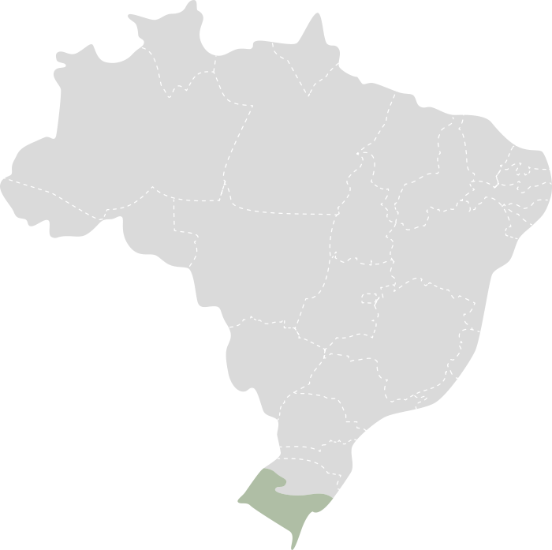

Bioma Pampa
O Pampa é um bioma localizado no sul do Brasil, bem como em partes da Argentina e do Uruguai. Também conhecido
como campos sulinos, o Pampa é caracterizado por suas vastas áreas de gramíneas e vegetação arbustiva. Este
bioma é uma das regiões menos conhecidas e menos preservadas do Brasil, mas desempenha um papel crucial na
biodiversidade e na economia regional.

Características Principais:
-
Vegetação
- Campos de Gramíneas: A vegetação predominante do Pampa é composta por extensas áreas de
gramíneas. Estas pastagens são adaptadas às condições de solo e clima da região, oferecendo pasto para a
fauna local.
- Arbustos e Vegetação Baixa: Além das gramíneas, o Pampa também apresenta arbustos
esparsos
e vegetação baixa, como o capim-do-campo e a rendenha, que são adaptados às condições de seca e fogo.
-
Clima
- Clima Subtropical: O clima do Pampa é subtropical, com verões quentes e invernos frios.
As
temperaturas variam bastante ao longo do ano, com médias anuais entre 10°C e 25°C.
- Precipitação: A precipitação é moderada e distribuída de forma relativamente uniforme
ao
longo do ano, com uma média anual que varia entre 1.200 mm e 1.800 mm. A região pode enfrentar períodos
de
seca, especialmente durante o inverno.
-
Hidrografia
- Rios e Córregos: O Pampa é drenado por vários rios e córregos que contribuem para a
fertilidade do solo e sustentam a vegetação local. Entre os rios importantes estão o Rio Uruguai e o Rio
Jacuí.
- Áreas de Alagamento: Existem áreas de alagamento e zonas úmidas que são vitais para a
biodiversidade, proporcionando habitat para várias espécies de fauna e flora.
-
Biodiversidade
- Fauna: O Pampa é lar de uma variedade de espécies adaptadas a suas condições abertas e
de
pastagens. Entre os animais encontrados estão o cervo-do-pampa, a ema, e várias espécies de aves como o
chororó e o tico-tico.
- Flora: A flora do Pampa inclui diversas espécies de gramíneas e plantas herbáceas, além
de
arbustos como a lobeira e o espinilho. Essas plantas são adaptadas a condições de solo e clima variados.
-
Importância Ecológica
- Preservação do Solo: As gramíneas do Pampa ajudam a prevenir a erosão do solo e a
manter a
fertilidade do terreno. A vegetação também desempenha um papel importante na regulação do ciclo hídrico.
- Habitat para Espécies: O bioma é crucial para a conservação de várias espécies nativas
e
migratórias, oferecendo habitat e alimento essenciais para a fauna local.
-
Ameaças
- Desmatamento e Expansão Agrícola: O Pampa enfrenta ameaças significativas devido ao
desmatamento e à expansão agrícola, que têm levado à perda de habitat e à redução da biodiversidade.
- Fogo e Uso da Terra: O uso do fogo para limpeza de pastagens e a conversão de áreas de
campo em terras agrícolas têm impacto negativo sobre o ecossistema e a fauna local.
O Pampa é um bioma com características únicas e desempenha um papel importante na biodiversidade e na economia do
sul do Brasil. A proteção e a conservação desse ecossistema são essenciais para preservar sua rica diversidade e
garantir a sustentabilidade de seus recursos naturais.